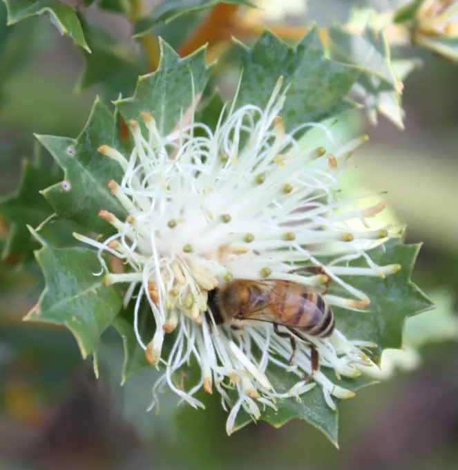
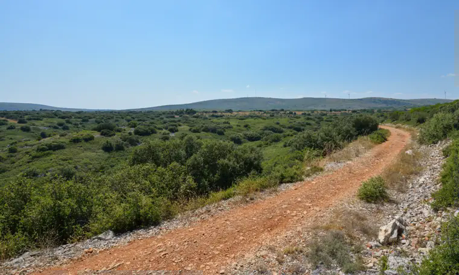
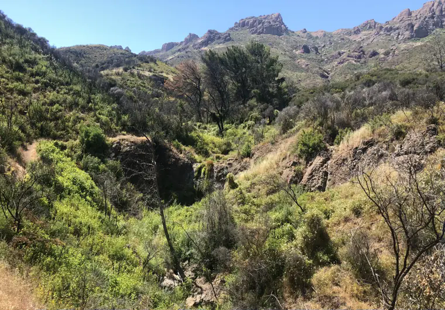
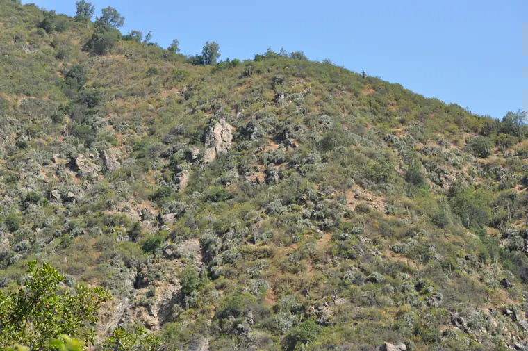
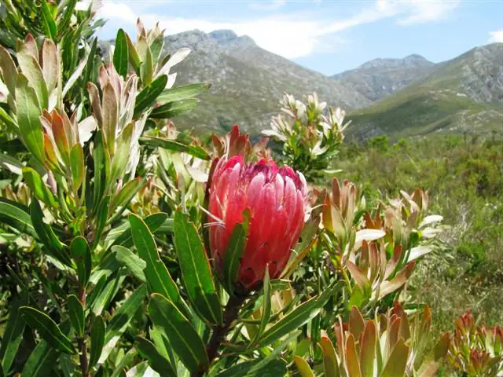

Walk past a patch of south-west bushland in spring and you may catch banksia flowers at eye level. Return late in summer and the ground and light will feel different. A garden here is working with that seasonal change, whether it is planted with local species or tended in pots behind a townhouse.
A Mediterranean climate typically brings dry summers and wetter, milder winters. The name comes from the Mediterranean Basin, but the pattern appears in four other parts of the world: parts of California, central Chile, South Africa’s Cape region and southern Australia, especially the south-west. Rainfall totals, soils and the length of the dry season vary within and between them. Each has its own plants and ecological history. Philip W. Rundel and colleagues, Mediterranean Biomes

Banksia sessilis in Bold Park
Hesperian / Wikimedia Commons · CC BY-SA 3.0 · resized


Garrigue near Montbazin, France
Christian Ferrer / Wikimedia Commons · CC BY-SA 3.0 · resized


Santa Monica Mountains chaparral
Artemizzia / Wikimedia Commons · CC BY 4.0 · resized


Matorral in La Campana National Park
Mar del Sur / Wikimedia Commons · CC BY-SA 4.0 · resized


Cape Winelands shale fynbos
Abu Shawka / Wikimedia Commons · CC0 1.0 · resized

Similar weather, different living landscapes
In the Mediterranean Basin, a path through the garrigue cuts between low shrubs. In southern California, chaparral covers slopes in dense brush. In central Chile, the matorral includes woody shrubs and, in some places, cactus and tall rosettes. The Cape’s fynbos brings together fine-leaved shrubs and plants such as proteas. Here in south-west WA, banksia woodland and other local communities have their own relationships with soil, water, fire and wildlife. Put the photographs side by side and you can see how many forms a landscape with a dry summer can take.
That variety offers a design lesson. You can borrow a way of arranging shade, or the pleasure of a path edged by low, textured plants. Begin species selection with what belongs in the local conditions, especially beside remnant bushland and wetlands. A plant that copes with a dry summer overseas still needs to suit your soil and the place you intend to grow it. Check local suitability and weed risk before buying a plant from another region.
Plant for the seasons you have
In south-west Australia, April–October rainfall has declined by around 16 per cent since 1970, according to the Bureau of Meteorology and CSIRO. That is a regional, observed change in cool-season rainfall. In your garden, what matters next is where the available water goes and how much care a new planting will need through its first dry season. State of the Climate, Bureau of Meteorology and CSIRO
Start with an area you can reach easily. Notice whether it has shelter, whether the soil dries quickly, and which existing plants are already coping. Choose a small planting you can maintain. Ask the nursery what it needs while roots are establishing and which season is suitable for putting it in. Once that patch can get through summer, you will know something worth using in the next one.
A garden that changes through the year belongs here. The bare seedhead, the shade that finally reaches the path and the first flush after rain each have their season. A Perth garden can draw its character from those changes.